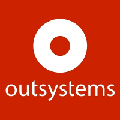
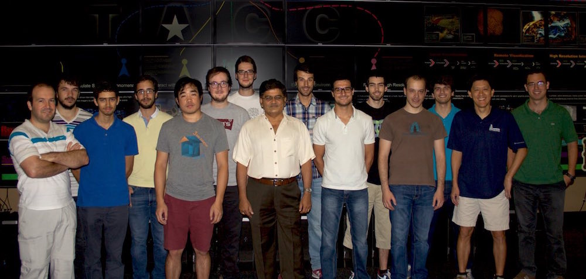
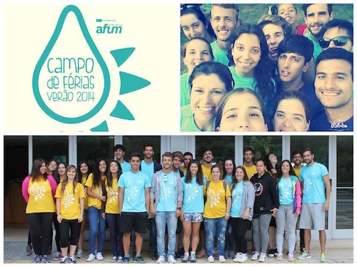
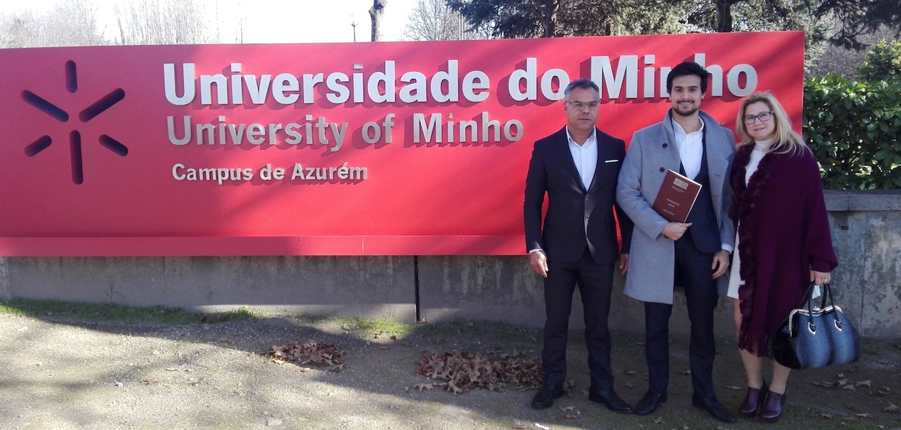
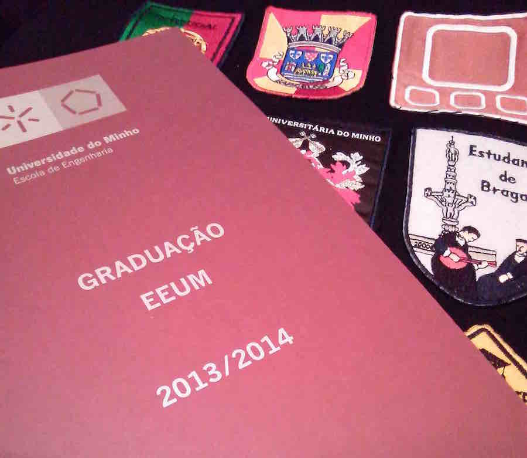
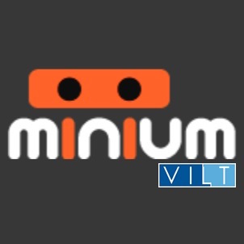
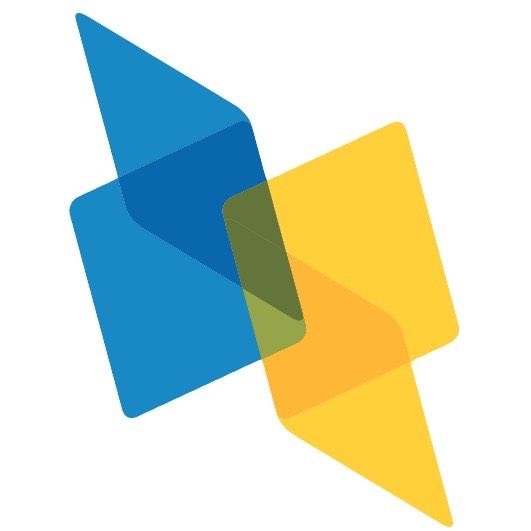
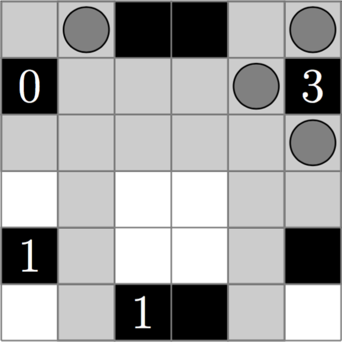

About
I am curious about everything since I remember and the will to learn more never disappears. In a world that is constantly changing, it is important to be always updated, especially when we talk about IT, where every day there are new technologies available.
I have studied BSc in Informatics Engineering at University of Minho. These were the most important years in my graduation, where I learned a new way of thinking before new problems. During these years, I followed some tutorials about Web Development that have proved very useful in some projects I was involved.
I am MSc Student Informatics Engineering at University of Minho. My primary interest at the moment is High Performance Computing (HPC) in parallel architectures, which is the topic of my master thesis. But, I’m also interested in other topics like Computer Graphics, Distributed Systems, Web Development and Mobile. I believe that we must be prepared to face several problems, so that we can adapt ourselves to several work circumstances.
Software Engineer
OutSystems, Braga, Portugal - (October 2016 to Present)
I am developing the core technological components of the OutSystems flagship product, the OutSystems Platform. I make part of a small team of top engineers, passionate about delivering high-quality software that evolves at the fast-pace of modern technology.
At OutSystems I am facing a wide range of engineering challenges, from planning to implementation and testing, including language design, compiler optimizations, UX design, database design and tuning, web and mobile frontend development and much more.
Software Developer Internship
Darmstadt University of Technology, Darmstadt, Germany - (January to August, 2016)
Under the Erasmus+ program and the Institute for Scientific Computing, I had access to a great opportunity to contact with new cultural and work environments, where I tested my limits.
During these months I developed efficient software modules under the theme "Multiple Precision in Efficient Lattice Reduction Algorithms". Afterwards, the accomplished work was gathered resulting in my master's thesis.
2015 Summer Internship in ‘Advanced Computing Research’
The University at Austin, Texas, United States of America - (July to August, 2015)
For the 8th continuous year, 15 Portuguese students traded their summer vacations for an advanced computing internship at The University of Texas at Austin. The program, International Collaboratory for Emerging Technologies (Co Lab), is an international exchange between three Portuguese institutions, University of Minho (UM), University of Porto (UP), and the Instituto Superior Técnico (IST), and UTAustin. For four to six weeks, graduate students developed joint research projects with experts at the Institute for Computational Sciences (ICES), UT's Department of Computer Science (CS), and the Texas Advanced Computing Center (TACC).
During the internship was assigned to the project 'Graph Unified Irregular Distributed Environment' (GUIDE). I was responsible for the software development and optimization of a graph concept in a computing distributed network.
Summer Camp Monitor
AFUM, University of Minho, Braga - (July 2014)
Every year, it is performed the 'Summer Camp' by AFUM at University of Minho. In order to give a new set of experiences to the children, the Summer Camp promotes and develops several sports, cultural and artistic activities dedicated to them.
I worked as 'Summer Camp Monitor' during one month, where I was responsible for 10 children under 10 years old. I developed a huge set of soft skills, that were needed to handle with all possible situations. Among them, leadership and communication were the most important skills developed during this experience.
Master's Degree in Informatics Engineering
University of Minho, Braga - (2014 to 2016)
The Parallel and Distributed Computing profile has as objective the development of generic skills in the construction and testing of efficient parallel applications for the next generation of computing platforms, which use hybrid components based on heterogeneous architectures CPU's containing multi/many-core and specific computational units (currently in GPU and FPGA).
The Distributed Systems and Cryptography profile targets a background in classical distributed systems, with emphasis on object oriented technologies, transactional systems, and fault tolerance, but also addresses emerging areas like mobile and cloud computing. In addition, also targets the security of the information and the reliability of IT systems.
The Computer Graphics profile includes aspects such as advanced programming technologies, computational geometry, computer vision, lighting techniques and image synthesis and the construction of virtual worlds with direct impact on application areas such as scientific visualization, simulation, among others.
Workplan
Parallel and Distributed Computing
- Advanced Architectures
- Parallel Computing Paradigms
- Parallel Algorithms
- Computer Systems Engineering
Distributed Systems and Cryptography
- Cryptography and Information Security
- Distributed Systems Paradigms
- Information Systems Security
- Reliable Distributed Systems
Computer Graphics
- Computer Vision
- Lighting and Visualisation I
Master's Thesis
My master's thesis was developed in High Performance Computing (HPC) field, where it was supervised by Prof. Alberto José Proença (Adviser) and Artur Mariano (Co-adviser). The thesis is entitled 'Towards an efficient lattice basis reduction implementation'.
The security of most digital systems is under serious threats due to major technology breakthroughs we are experienced in nowadays. Lattice-based cryptosystems are one of the most promising post-quantum types of cryptography, since it is believed to be secure against quantum computer attacks. Their security is based on the hardness of the Shortest Vector Problem and Closest Vector Problem.
Bachelor's Degree in Informatics Engineering
University of Minho, Braga - (2010 to 2014)
The bachelor aims to prepare software engineers, able at all stages currently recognized in the rigorous process of analysis, design and implementation of IT solutions, wherein their ultimate goal is to provide a wide range of expertise and knowledge (theoretical and practical) needed to:
- The analysis and specification of software systems requirements to be implemented;
- Applying prototype construction techniques;
- The project design, development, testing and maintenance of computer applications;
- The implementation of computer communication networks and infrastructures support.
- The management and implementation of IT projects, including the design and implementation of computer systems.
Portfolio
Sportgest
Sportgest allows sports coaches to management of information relating to their squad.
Integrit
Integrit is a Java Service that implements a File Verification System on Unix.
Integrit
The project aims to implement a background Java Service that is started automatically when the system is turned on. It is a File Verification System on Unix. The service is also able to recover its previous state, by saving its state into a file. It can be started, paused, and stopped at any time with the use of system signals, i.e., HUP and INT.
Every time that someone access a file or directory, it is left a trace. Thus, it is possible to prevent/avoid possible attacks to sensitive information. This project verifies:
- Last access to a directory/file;
- Last time a file was edited;
- New directories/files;
- Deleted directories/files;
- Ownership's changes;
- Group's changes;
- Change of access permissions;
Then, there are done system logs with different levels of danger.
Secure Chat-Server

Secure Chat-Server is a simple chat-room that implements the best cryptographic tecniques.
Secure Chat-Server
Secure Chat-Server is a simple chat-room that implements the best cryptographic techniques that should be implemented in secure everyday applications. This project is constituted by two main applications (Client-side and Server-side).
The messages are encrypted and decrypted by the chosen cryptosystem, i.e., CBC. At the beginning of each communication, the key is agreed by the two entities with the Diffie–Hellman key exchange protocol.
Unfortunately, these techniques cannot avoid the well-known man-in-the-middle attack. Thus, it implements digital signatures, where we simulate a Certification Authority (CA) to generate and sign the digital certificates. These digital certificates are managed with X.509 standard for a Public Key Infrastructure (PKI).
Minium Social Bot
Minium Social Bot is a bot that is capable to manage his social network, i.e., Twitter.
3D Graphics Engine
3D Graphics Engine is a C++ engine that is capable of rendering 2D and 3D graphics.
DBLP
DBLP is a C language application for statistical processing of bibliographic information.
Illuminatus
Illuminatus is a puzzle game that aims to light up all unlocked cells in the board.
Be CREATIVE!!
Contact Me
OR